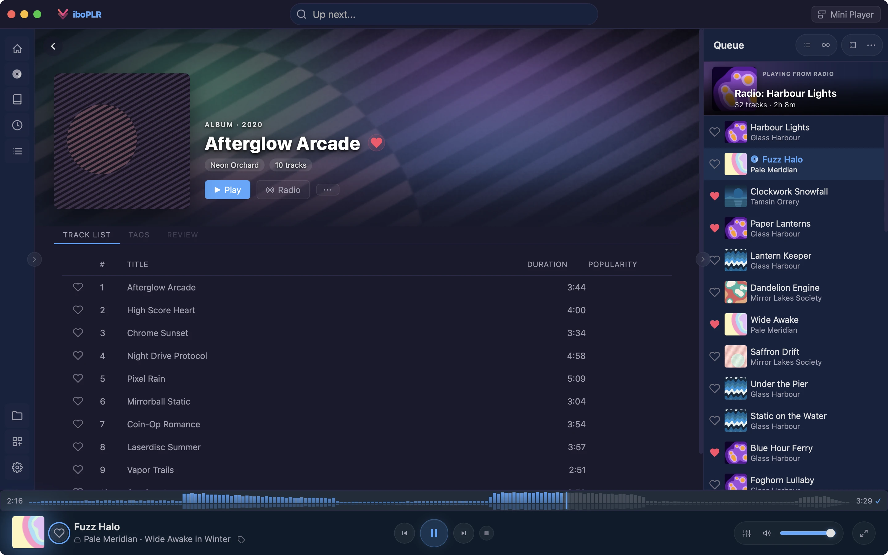

Soulseek, YouTube and BitTorrent plugins that search from inside your player and hand finished files straight to your library. No more downloading in one app and importing in another.
Soulseek
Lossless, ranked by quality
The Soulseek plugin drives slskd, the Soulseek client you run yourself; a guided setup walks you through it. Search results come back best quality first, a whole album is one click, and “Fill missing tracks” grabs only the songs you don’t have.
Upgrade a library track to FLAC, hi-res or MP3 320 — real bitrate checkedplugin
Compare and replace before anything in your library changesplugin
Downloads tab with queue position, retry and other sourcesplugin
Video: Soulseek search to librarySearch an album → pick the FLAC folder → it downloads and appears in the library
yt-dlp
YouTube, SoundCloud, Bandcamp and more
Search YouTube and SoundCloud, or paste a link from any site yt-dlp supports. Play the audio, watch the video in Viboplr’s theater, or download it. Any track in your library gets a “Watch YouTube video” option to find its video.
Download the original audio, or as AAC, MP3, Opus, FLAC or videoplugin
Playlist links expand into your queueplugin
Viboplr installs yt-dlp for you and keeps it up to date
Screenshot: yt-dlp searchYouTube results with Play, Watch and Download on each row
BitTorrent
Torrents, two ways
Already run qBittorrent? Its plugin controls your client from Viboplr: search torrent sites, pick the files you want, and play them once they finish, saved into a library folder. Don’t want a client at all? The rqbit plugin downloads a magnet link straight into your library, with nothing left running afterwards.
rqbit: paste a magnet, get files — Viboplr installs itplugin
Screenshot: qBittorrent in ViboplrTorrent search results and the file picker
Built in
One download window for everything
Whatever the source, downloads go through the same window, and the downloader follows the track: a song from your Subsonic server downloads from your server, a yt-dlp result through yt-dlp. On album and artist pages, the tracks you’re missing get a Download button of their own.
Save into a library folder, or anywhere you like
Live progress, and Cancel that works mid-download
Replace a lower-quality local file after comparing the two

The Soulseek, qBittorrent and rqbit plugins are marked experimental in the gallery. Download only what you have the right to.